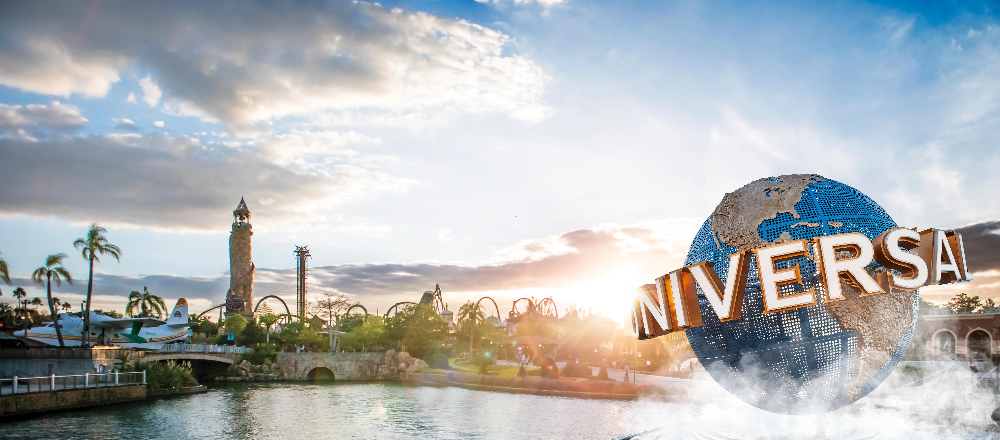
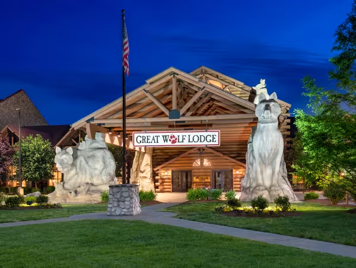
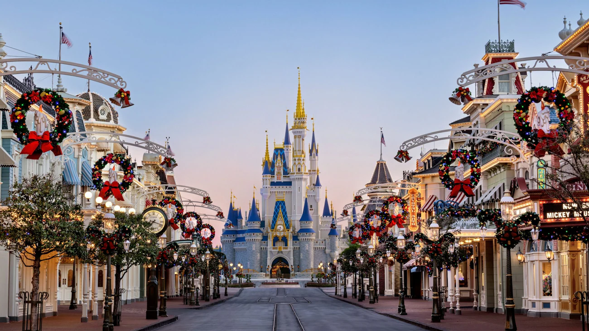

2. Universal Studio
There was a lot to do there and a lot of food.

3. Great Wolf Lodge
Fun beaucse we went with friends but all we did was swim.

4. State Fair
Everything was packed and expensive.

It was really fun because me and my family went there with out friends.

There was a lot to do there and a lot of food.

Fun beaucse we went with friends but all we did was swim.

Everything was packed and expensive.